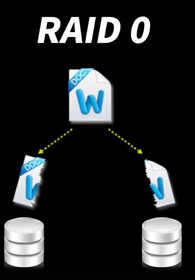
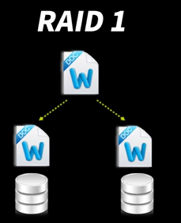
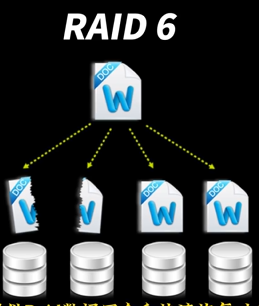
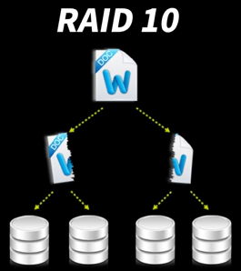

硬盘RAID阵列
RAID0
RAID1
RAID5
RAID6
RAID其他
参考
RAID磁盘阵列是什么（一看就懂） - 知乎 (zhihu.com)
什么是磁盘阵列？15种RAID优缺点详解 (RAID5 RAID6 RAID10 RAIDZ SHR UNRAID)_哔哩哔哩_bilibili
RAID磁盘阵列是什么（一看就懂） - 知乎 (zhihu.com)
什么是磁盘阵列？15种RAID优缺点详解 (RAID5 RAID6 RAID10 RAIDZ SHR UNRAID)_哔哩哔哩_bilibili